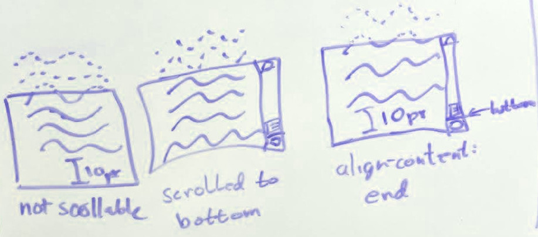

This module contains the features of CSS relating to scrollable overflow handling in visual media.
This level is focused on completing a precise specification for the existing overflow features,
including the overflow property and its longhands;
line-clamp, its longhands, and its legacy pre-standard syntax;
and the text-overflow property.
A few additional features introduced in support of [CSS-CONTAIN-1] and [CSS-CONTAIN-2] are also defined:
overflow: clip and the overflow-clip-margin property.
CSS is a language for describing the rendering of structured documents
(such as HTML and XML)
on screen, on paper, etc.
Status of this document
This is a public copy of the editors’ draft.
It is provided for discussion only and may change at any moment.
Its publication here does not imply endorsement of its contents by W3C.
Don’t cite this document other than as work in progress.
Please send feedback
by filing issues in GitHub (preferred),
including the spec code “css-overflow” in the title, like this:
“[css-overflow] …summary of comment…”.
All issues and comments are archived.
Alternately, feedback can be sent to the (archived) public mailing list
www-style@w3.org.
The description of overflow and its longhands is considered
significantly more complete and correct than previous working drafts
or than [CSS2],
but a few questions and issues remain open.
''overflow: clip' and overflow-clip-margin are rather new,
and lack implementation experience.
text-overflow is stable,
is unchanged form its earlier definition in [CSS-UI-3].
While not yet fully validated by implementation experience,
the design of line-clamp and its longhands is considered roughly complete.
Earlier versions of this specification included experimental new ideas
for handling overflow by creating new boxes using fragmentation.
These ideas are not abandoned; they are merely deferred until Level 4.
Work will resume on fragmented overflow once this level stabilizes completed.
The following features are at-risk, and may be dropped during the CR period:
“At-risk” is a W3C Process term-of-art, and does not necessarily imply that the feature is in danger of being dropped or delayed. It means that the WG believes the feature may have difficulty being interoperably implemented in a timely manner, and marking it as such allows the WG to drop the feature if necessary when transitioning to the Proposed Rec stage, without having to publish a new Candidate Rec without the feature first.
1.
Introduction
In CSS Level 1 [CSS1], placing more content than would fit
inside an element with a specified size
was generally an authoring error.
Doing so caused the content to extend
outside the bounds of the element,
which would likely cause
that content to overlap with other elements.
CSS Level 2 [CSS2] introduced the overflow property,
which allows authors to have overflow be handled by scrolling,
which means it is no longer an authoring error.
It also allows authors to specify
that overflow is handled by clipping,
which makes sense when the author’s intent
is that the content not be shown.
This specification introduces the long-standing de-facto overflow-x and overflow-y properties,
adds a clip value,
and defines overflow handling more fully.
Note: This specification also reproduces the definition of the text-overflow property
previously defined in [CSS-UI-3],
with no addition or modification,
in order to present text-overflow and block-ellipsis together.
1.1.
Value Definitions
This specification follows the CSS property definition conventions from [CSS2]
using the value definition syntax from [CSS-VALUES-3].
Value types not defined in this specification are defined in CSS Values & Units [CSS-VALUES-3].
Combination with other CSS modules may expand the definitions of these value types.
In addition to the property-specific values listed in their definitions,
all properties defined in this specification
also accept the CSS-wide keywords as their property value.
For readability they have not been repeated explicitly.
2.
Types of Overflow
CSS uses the term overflow to describe
the contents of a box
that extend outside one of that box’s edges
(i.e., its content edge, padding edge,
border edge, or margin edge).
The term might be interpreted as
elements or features that cause this overflow,
the non-rectangular region occupied by these features,
or, more commonly, as
the minimal rectangle that bounds that region.
A box’s overflow is computed based on the layout and styling of the box itself
and of all descendants whose containing block chain
includes the box.
In most cases, overflow
can be computed for any box
from the bounds and properties of that box itself,
plus the overflow
of each of its children.
However, this is not always the case; for example,
when transform-style: preserve-3d[CSS3-TRANSFORMS] is used on
some of the children, any of their descendants with
transform-style: preserve-3d must also be examined.
There are two different types of overflow,
which are used for different purposes by the UA:
The ink overflow of a box
is the part of that box and its contents that
creates a visual effect outside of
the box’s border box.
Ink overflow is the overflow of painting effects defined to not affect layout
or otherwise extend the scrollable overflow area,
such as box shadows,
border images,
text decoration,
overhanging glyphs (with negative side bearings,
or with ascenders/descenders extending outside the em box),
outlines,
etc.
The ink overflow area is the non-rectangular area
occupied by the ink overflow
of a box and its contents,
and the ink overflow rectangle is
the minimal rectangle whose axes are aligned to the box’s axes
and that contains the ink overflow area.
Note that the ink overflow rectangle is a rectangle
in the box’s coordinate system, but might be non-rectangular
in other coordinate systems due to transforms. [CSS3-TRANSFORMS]
The scrollable overflow of a box is the
set of things extending outside of that box’s padding edge
for which a scrolling mechanism needs to be provided.
The scrollable overflow area is the non-rectangular region
occupied by the scrollable overflow, and the
scrollable overflow rectangle is
the minimal rectangle whose axes are aligned to the box’s axes
and that contains the scrollable overflow area.
The border boxes
of all boxes for which it is the containing block
and whose border boxes are positioned not wholly outside
its block-start or inline-start padding edges,
accounting for transforms by projecting each box onto
the plane of the element that establishes its 3D rendering context.
[CSS3-TRANSFORMS]
Is this description of handling transforms
sufficiently accurate?
The margin areas of grid item and flex item boxes
for which the box establishes a containing block.
The UA may additionally include
the margin areas of other boxes
for which the box establishes a containing block;
however,
the conditions under which such margin areas are included
is undefined in this level.
This needs further testing and investigation;
is therefore deferred in this draft.
The scrollable overflow areas of all of the above boxes
(including zero-area boxes
and accounting for transforms as described above),
provided they themselves have overflow: visible
(i.e. do not themselves trap the overflow)
and that scrollable overflow is not already clipped
(e.g. by the clip property or the contain property).
should overflow: clip also clip the scrollable overflow
or should it remain a pure paint-time operation,
which would mean that scrollable overflow, while invisible, would still be scrollable.
Note: This padding represents,
within the scrollable overflow rectangle,
the box’s own padding
so that when its in-flow content is scrolled to the end,
there is padding between the end-edge of its content
and the border edge of the box.
It typically ends up being exactly the same size as the box’s own padding,
except in a few cases—such as when an out-of-flow element,
or the visible overflow of a descendent,
has already increased the size of the scrollable overflow rectangle
outside the conceptual “content edge” of the scroll container’s content.

Issue: Replace this image with a proper SVG.
Note: The scrollable overflow rectangle is always a rectangle
in the box’s own coordinate system, but might be non-rectangular
in other coordinate systems due to transforms [CSS3-TRANSFORMS].
This means scrollbars can sometimes appear when not actually necessary.
These properties specify whether a box’s content
(including any ink overflow)
is clipped to its padding edge,
and if so,
whether it is a scroll container
that allows the user to scroll clipped parts of its scrollable overflow area
into view.
The visual viewport of the scroll container
(through which the scrollable overflow area can be viewed)
coincides with its padding box,
and is called the scrollport.
For convenience, a box’s nearest scrollport
is the scrollport of its nearest scroll container ancestor.
The overflow-x property specifies
the handling of overflow in the horizontal direction
(i.e., overflow from the left and right sides of the box),
and the overflow-y property specifies the handling
of overflow in the vertical direction
(i.e., overflow from the top and bottom sides of the box).
The overflow property is a shorthand property
that sets the specified values of overflow-x and overflow-y in that order.
If the second value is omitted, it is copied from the first.
Values have the following meanings:
visible
There is no special handling of overflow, that is,
the box’s content is rendered outside the box if positioned there.
The box is not a scroll container.
hidden
This value indicates that
the box’s content is clipped to its padding box
and that the UA must not provide any scrolling user interface
to view the content outside the clipping region,
nor allow scrolling by direct intervention of the user,
such as dragging on a touch screen
or using the scrolling wheel on a mouse.
However, the content must still be scrollable programmatically,
for example using the mechanisms defined in [CSSOM-VIEW],
and the box is therefore still a scroll container.
clip
This value indicates that
the box’s content is clipped to its overflow clip edge
and that no scrolling user interface should be provided by the UA
to view the content outside the clipping region.
In addition, unlike overflow: hidden
which still allows programmatic scrolling,
overflow: clip forbids scrolling entirely,
through any mechanism,
and therefore the box is not a scroll container.
Unlike hidden, this value does not cause
the element to establish a new formatting context.
This value indicates that
the content is clipped to the padding box,
but can be scrolled into view
(and therefore the box is a scroll container).
Furthermore, if the user agent uses a scrolling mechanism
that is visible on the screen (such as a scroll bar or a panner),
that mechanism should be displayed
whether or not any of its content is clipped.
This avoids any problem with scrollbars appearing
and disappearing in a dynamic environment.
When the target medium is print,
overflowing content may be printed;
it is not defined where it may be printed.
auto
Like scroll when the box has scrollable overflow;
like hidden otherwise.
Thus, if the user agent uses a scrolling mechanism
that is visible on the screen (such as a scroll bar or a panner),
that mechanism will only be displayed
if there is overflow.
The user agent must not make any scrolling mechanism visible.
To the extent that the scrolling mechanism that would normally be visible
in the absence of visibility: hidden affects layout,
it continues to do so, but is not painted.
As would be the case with overflow: hidden,
scrolling directly triggered by user interactions is disabled,
but programmatic scrolling continues to take effect.
The lack of interactive direct scrolling is enforced
even if the user interacts (e.g. with a mouse scrolling wheel)
with a descendent of the visibility: hiddenscroll container
that is itself set to visibility: visible.
Note: In the case where the scroll container (or one of its ancestors)
is the target of a graphical transform,
the UA might need to take this transform into account
when mapping user inputs to scrolling operations.
For instance, on a touch screen where the user scrolls
by directly dragging the content,
the transform would be expected to be taken into account
to match the direction of scrolling to the gesture.
On the other hand, other user inputs
(such as the Page Down key, or a 1D scroll wheel)
might be more naturally interpreted ignoring the transform.
Choosing the appropriate behavior for each scrolling mechanism
is the responsibility of the UA.
Note: Application of overflow to replaced elements was added
to allow images to paint effects outside their effective layout box;
the recommended UA style sheet rules are to effect their original behavior as a default.
See discussion in Issue 7059
and Issue 7144.
This is a change from CSS2.1
and is at-risk.
3.1.
Overflow in Print and Other Static Media
Since scrolling is not possible in static media
(such as print)
authors should be careful to make content accessible in such media,
for example by using @media print, (update: none) { … }
to adjust layout such that all relevant content
is simultaneously visible.
On scroll containers in non-interactive media
with an overflow value of auto or scroll
(but not hidden)
UAs may display an indication of any scrollable overflow,
such as by displaying scrollbars
or an ellipsis.
Note: Not all paged media is non-interactive
for example, e-book readers page content,
but are interactive.
3.2.
Scrollbars and Layout
When reserving space for a scrollar placed at the edge of an element’s box,
the reserved space is inserted between the inner border edge
and the outer padding edge.
For the purpose of the background positioning area and background painting area however,
this reserved space is considered to be part of the padding box.
In the following document fragment,
both an absolutely-positioned element
and a background image
are positioned to the top right of the box.
If no scrollbars are present on <article>,
they will both coincide in the top right padding edge corner.
However, if scrollbars are present
then <aside> will be completely visible,
on the right padding-box edge adjacent to the scrollbars;
whereas the background image will be tucked underneath the scrollbars,
in the top right corner of the scrollbar-extended background positioning area.
When the box is intrinsically sized,
this reserved space is added to the size of its contents.
It is otherwise subtracted from space alotted to the content area.
To the extent that the presence of scrollbars can affect sizing,
UAs must start with the assumption that no scrollbars are needed,
and recalculate sizes if it turns out they are.
In the following document fragment,
the outer <article> has height: auto, but max-height: 5em.
The inner <section> has large margins and would normally just fit:
...
article { overflow: auto; max-height: 5em; width: max-content; }
section { margin: 2em; line-height: 1 }
...
<article><section>
This section has big margins.
</section></article>
If we assumed that <article> needed scrollbars,
then the height of <section>,
including the single line of text and twice 2em of margins,
adds up to 5em plus a scrollbar.
Since that is greater than 5em, the maximum allowed height,
it seems we made the right assumption and d1 indeed needs scrollbars.
However, we should have started by assuming that no scrollbars are needed.
In that case the content height of <article>
is exactly the maximum height of 5em,
proving that the assumption was correct
and <article> indeed should not have scrollbars.
Due to Web-compatibility constraints
(caused by authors exploiting legacy bugs to surreptitiously hide content from visual readers but not search engines and/or speech output),
UAs must clip the scrollable overflow area
of scroll containers
on the block-start and inline-start sides of the box
(thereby behaving as if they had no scrollable overflow on that side).
per computed value if the <visual-box> values match; otherwise discrete
This property defines the overflow clip edge of the box,
i.e. precisely how far outside its bounds
the box’s content is allowed to paint
before being clipped
by effects (such as overflow: clip, above)
that are defined to clip to the box’s overflow clip edge.
The specified offset dictates
how much the overflow clip edge is expanded from
the specified box edge
Negative values are invalid.
Defaults to zero if omitted.
Note: This property has no effect on boxes
with overflow: hidden or overflow: scroll,
which are not defined to use the overflow clip edge.
3.5.
Overflow Viewport Propagation
UAs must apply the overflow-* values
set on the root element to the viewport
when the root element’s display value is not none.
However,
when the root element is an [HTML]html element
(including XML syntax for HTML)
whose overflow value is visible (in both axes),
and that element has as a child
a body element whose display value is also not none,
user agents must instead apply the overflow-* values
of the first such child element to the viewport.
The element from which the value is propagated must then have
a used overflow value of visible.
Note:overflow: hidden on the root element
might not clip everything outside the Initial Containing Block
if the ICB is smaller than the viewport,
which can happen on mobile.
If visible is applied to the viewport,
it must be interpreted as auto.
If clip is applied to the viewport,
it must be interpreted as hidden.
The scroll-behavior property specifies the scrolling behavior for a scroll container,
when scrolling happens due to navigation,
scrolling APIs [CSSOM-VIEW],
or scroll snapping operations not initiated by the user [CSS-SCROLL-SNAP-1].
Any other scrolls, e.g. those that are performed by the user, are not affected by this property.
When this property is specified on the root element, it applies to the viewport instead.
Note: The scroll-behavior property of the HTML body element is not propagated to the viewport.
The scroll container is scrolled in a smooth fashion
using a user-agent-defined timing function over a user-agent-defined period of time.
User agents should follow platform conventions, if any.
User agents may ignore this property.
4.
Reserving space for the scrollbar: the scrollbar-gutter property
The space between the inner border edge and the outer padding edge
which user agents may reserve to display the scrollbar
is called the scrollbar gutter.
The scrollbar-gutter property gives control to the author
over the presence of scrollbar gutters
separately from the ability to control the presence of scrollbars
provided by the overflow property.
Scrollbars which by default are placed over the content box
and do not cause scrollbar gutters to be created
are called overlay scrollbars.
Such scrollbars are usually partially transparent, revealing the content behind them if any.
Their appearance and size may vary
based on whether and how the user is interacting with them.
Scrollbars which are always placed in a scrollbar gutter,
consuming space when present,
are called classic scrollbars.
Such scrollbars are usually opaque.
Whether classic scrollbars or overlay scrollbars are used,
the appearance and size of the scrollbar,
and whether scrollbars appear on the start or end edge of the box,
is UA defined.
Note: Which side a scrollbar appears on may depend on
operating system conventions,
bidirectionality,
or other ergonomic considerations.
Note: This does not change whether the scrollbar itself is visible,
only the presence of a gutter is affected.
both-edges
If a scrollbar gutter would be present
on one of the inline start edge or the inline end edge of the box,
another scrollbar gutter must be present on the opposite edge as well.
When the scrollbar gutter is present but the scrollbar is not,
or the scrollbar is transparent or otherwise does not fully obscure the scrollbar gutter,
the background of the scrollbar gutter must be painted as an extension of the padding.
As for the overflow property,
when scrollbar-gutter is set on the root element,
the user agent must apply it to the viewport instead,
and the used value on the root element itself is scrollbar-gutter: auto.
However, unlike the overflow property,
the user agent must not propagate scrollbar-gutter from the HTML body element.
This property specifies rendering when inline content overflows
its end line box edge
in the inline progression direction of its block container element ("the block")
that has overflow
other than visible.
Text can overflow for example when it is prevented from wrapping
(e.g. due to white-space: nowrap
or a single word is too long to fit).
Values have the following meanings:
clip
Clip inline content that overflows its block container element. Characters may be only partially rendered.
ellipsis
Render an ellipsis character (U+2026)
to represent clipped inline content.
Implementations may substitute a more language, script, or writing-mode appropriate
ellipsis character,
or three dots "..." if the ellipsis character is unavailable.
The term "character" is used in this property definition
for better readability and means "grapheme cluster" [UAX29]
for implementation purposes.
For the ellipsis value
implementations must hide characters and
atomic inline-level elements
at the end edge of the line as necessary to fit the ellipsis, and
place the ellipsis immediately adjacent
to the end edge of the remaining inline content.
The first character or
atomic inline-level element
on a line
must be clipped rather than ellipsed.
Bidi ellipsis examples
These examples demonstrate which characters get hidden
to make room for the ellipsis in a bidi situation:
those visually at the end edge of the line.
Sample CSS:
div {font-family: monospace;white-space: pre;overflow: hidden;width:9ch;text-overflow: ellipsis;}
Sample HTML fragments, renderings, and your browser:
HTML
Reference rendering
Your Browser
<div>שלום 123456</div>
123456 ם…
שלום 123456
<divdir=rtl>שלום 123456</div>
…456 שלום
שלום 123456
ellipsing details
Ellipsing only affects rendering and must not affect layout
nor dispatching of pointer events:
The UA should dispatch any pointer event on the ellipsis to the elided element,
as if text-overflow had been none.
The ellipsis is styled and baseline-aligned according to
the block.
Ellipsing occurs after relative positioning and other graphical transformations.
If there is insufficient space for the ellipsis,
then clip the rendering of the ellipsis itself
(on the same side that neutral characters on the line
would have otherwise been clipped with the text-overflow:clip value).
user interaction with ellipsis
When the user is interacting with content
(e.g. editing, selecting, scrolling),
the user agent may treat text-overflow: ellipsis as text-overflow: clip.
Selecting the ellipsis should select the ellipsed text.
If all of the ellipsed text is selected,
UAs should show selection of the ellipsis.
Behavior of partially-selected ellipsed text is up to the UA.
Example(s):
text-overflow examples
These examples demonstrate setting the text-overflow of a block container element
that has text which overflows its dimensions:
sample CSS for a div:
div {font-family:Helvetica,sans-serif;line-height:1.1;width:3.1em;padding:.2em;border:solid .1em black;margin:1em0;}
sample HTML fragments, renderings, and your browser:
HTML
sample rendering
your browser
<div>
CSS IS AWESOME, YES
</div>
CSS IS AWESOME, YES
<divstyle="text-overflow:clip; overflow:hidden">
CSS IS AWESOME, YES
</div>
CSS IS AWESOME, YES
<divstyle="text-overflow:ellipsis; overflow:hidden">
CSS IS AWESOME, YES
</div>
Note: the side of the line that the ellipsis is placed depends on the direction of the block.
E.g. an overflow hidden right-to-left
(direction: rtl)
block clips inline content on the left side,
thus would place a text-overflow ellipsis on the left
to represent that clipped content.
ellipsis interaction with scrolling interfaces
This section applies to elements with text-overflow other than text-overflow:clip
(non-clip text-overflow)
and overflow:scroll.
When an element with non-clip text-overflow has overflow of scroll
in the inline progression dimension of the text,
and the browser provides a mechanism for scrolling
(e.g. a scrollbar on the element,
or a touch interface to swipe-scroll, etc.),
there are additional implementation details that provide a better user experience:
When an element is scrolled (e.g. by the user, DOM manipulation),
more of the element’s content is shown.
The value of text-overflow should not affect
whether more of the element’s content is shown or not.
If a non-clip text-overflow is set,
then as more content is scrolled into view,
implementations should show whatever additional content fits,
only truncating content which would otherwise be clipped
(or is necessary to make room for the ellipsis/string),
until the element is scrolled far enough
to display the edge of the content
at which point that content should be displayed
rather than an ellipsis/string.
This example uses text-overflow on an element with overflow scroll
to demonstrate the above described behavior.
This property allows inserting content into the last line box
before a (forced or unforced) region break
to indicate the continuity of truncated/interrupted content.
It only affects line boxes contained directly by the block container itself,
but as it inherits, will have an effect on descendants’ line boxes unless overridden.
If the box contains no line box immediately preceding a region break,
then this property has no effect.
Should this apply to other types of fragmentation breaks (e.g. pages, columns)?
The inserted content is called the block overflow ellipsis.
Values have the following meanings:
none
The rendering is unaffected.
auto
Render an ellipsis character (U+2026)—or a more typographically-appropriate equivalent—as the block overflow ellipsis
at the end of the affected line box.
UAs should use the conventions of the
content language,
writing system, and
writing mode
to determine the most appropriate ellipsis string.
Render the specified string
as the block overflow ellipsis
at the end of the affected line box.
The UA may truncate this string if it is absurdly long.
When block-ellipsis is not none,
the block overflow ellipsis string
is wrapped in an anonymous inline
and placed at the end of the line box
as a direct child of the block container’s root inline box,
reducing the space in the line box
available to the other contents of the line.
This inline is assigned unicode-bidi: plaintext
and line-height: 0
and is placed in the line box after the last
soft wrap opportunity (see [CSS-TEXT-3])
that would still allow the entire block overflow ellipsis to fit on the line.
For this purpose, soft wrap opportunities added by overflow-wrap are ignored.
If this results in the entire contents of the line box being displaced,
the line box is considered to contain a strut, as defined in CSS 2 § 10.8.1 Leading and half-leading.
Text alignment and justification
occurs after placement,
and measures the inserted block overflow ellipsis
together with the rest of the line’s content.
Note: Setting the block overflow ellipsis’s line-height to 0
makes sure that inserting it cannot cause the line’s height to grow,
which could cause further relayouts and potentially cycles.
This is almost equivalent to inserting the block overflow ellipsis
as a paint-time operation, except that it still participates in alignment and justification.
The downside is that unusually tall / deep glyphs in the block overflow ellipsis
may overflow.
The UA must treat the block overflow ellipsis as an unbreakable string,
If any part of the block overflow ellipsis overflows,
it is treated as scrollable overflow,
and its rendering is affected by the text-overflow property.
The block overflow ellipsis does not capture events:
pointer events are dispatched to whatever is underneath it.
Note: Future specifications may extend this feature,
for example by providing an ::ellipsis pseudo-element
to style the text,
or by allowing the selection of a child element of the block
to use as either an inline-level or block-level indicator
(in which case, it can capture events).
6.
Fragmenting Overflow
6.1.
Limiting Visible Lines: the line-clamp shorthand property
For the time being,
experimental implementations are encouraged
to follow the full behavior defined by this shorthand and its longhands,
but to only expose the shorthand to authors.
This is in order to facilitate further tweaking,
and in particular potential renaming,
of the longhand properties and their values.
It allows limiting the contents of a block container
to the specified number of lines;
remaining content is fragmented away
and neither rendered nor measured.
Optionally, it also allows inserting content into the last line box
to indicate the continuity of truncated/interrupted content.
See the corresponding longhand properties for details
about how this mechanism operates.
In this example, the lead paragraph of each article
is listed in a shortened menu,
truncated to fit within 10 lines
that end with “… (continued on next page)”:
li {line-clamp:5"… (continued on next page)";}
strong {display: block;text-transform: uppercase;}
<li><ahref="cheese-is-milk"><strong>Cheese is Actually Made of Milk!</strong>
Investigative reporters at the World Wide Web Press Corps
have discovered the secret of cheese.
Tracing through byzantine layers of bureaucracy and shadow corporations,
our crack team of journalists have traced the source of camembert.
</a></li>
Sample rendering:
+---------------------------------------+
| CHEESE IS ACTUALLY MADE OF MILK! |
| Investigative reporters at the World |
| Wide Web Press Corps have discovered |
| the secret of cheese. Tracing through |
| byzantine… (continued on next page) |
+---------------------------------------+
Additionally, for children (including anonymous children)
of boxes whose display property computes to -webkit-box or -webkit-inline-box,
the used values of the max-lines, continue, and block-ellipsis properties
are taken from the computed values of the parent box;
the computed values of these properties on the box itself are ignored.
The -webkit-discard value behaves identically to discard,
except that it only takes effect
if the computed value of the display property on the parent
is -webkit-box or -webkit-inline-box
and the computed value of the -webkit-box-orient property on the parent
is vertical.
Note: Implementations of the legacy -webkit-line-clamp property
have not behaved identically to what is specified here.
The historical behavior is quirky and less robust,
as documented for example in this blog post.
The current design learns from the mistakes of that early experiment,
and is intended to be sufficiently compatible with existing content
that implementations can eventually be changed to follow to the specified behavior.
If further adjustments are found to be necessary,
they will be incorporated to this specification.
In the meanwhile, authors should be aware that there may be discrepancies.
6.2.
Forcing a Break After a Set Number of Lines: the max-lines property
<divid=a>
a: line 1<br>
a: line 2<br><divid=b>
b: line 1<br>
b: line 2<br>
b: line 3<br>
b: line 4<br></div>
a: line 3<br>
a: line 4<br></div>
Sample rendering given #a {line-clamp:5;} #b {line-clamp:2;}:
a: line 1
a: line 2
b: line 1
b: line 2…
a: line 3…
Sample rendering given #a {line-clamp:3;} #b {line-clamp:2;}:
a: line 1
a: line 2
b: line 1…
Note that in the second case,
the maximum of 2 lines set on element #b does not take effect,
since a forced break is introduced
before the second line of this element.
Note: Despite the “region break” name, this is not a dependency on [CSS-REGIONS-1].
The word “region” is only used as a classifier for forced breaks:
they can be “page breaks” (breaks across pages [css-page-3]),
“column breaks” (breaks across multi-column layout columns [css-multicol-1]),
or “region breaks” (breaks across any other kind of CSS-induced fragmentation containers).
If an implementation supports neither [CSS-REGIONS-1] nor CSS Overflow 4 § A Redirection of Overflow,
then it will have had no occasion yet to run into that kind of breaks,
and this will be an addition.
However the addition does not involve bringing over any of the [CSS-REGIONS-1] functionality.
All that is needed is:
be able to fragment
classify these fragmentation containers as “Category 3”
(i.e. not pages nor columns)
for the purpose of forced breaks.
6.3.
Fragmentation of Overflow: the continue property
This property is meant to generalize and replace the region-fragment property from [CSS-REGIONS-1].
Once it is sufficiently stable in this specification,
region-fragment should be removed from the regions specification in favor of this.
auto
If the box has more content than can fit,
the excess content is handled according to the usual rules.
Given an article with one excessively long overflowing line,
and four more lines than can fit in the fragmentation direction as in the illustration bellow,
different renderings are possible based on the combination of the overflow and continue property.
Clarified that region breaks are what trigger discarding of subsequent content
for continue: discard (and that other types of breaks do not);
and gave examples of what triggers a region break on such a box.
Define the legacy behavior of -webkit-line-clamp for compatibility with existing content
Define that end padding is included in the scrollable overflow area except for block containers
(which are more tricky to handle, due to web-compat issues)
Define that Margins of flex and grid items are included in scrollable overflow
Do not propagate overflow from boxless elements
Rename 'scrollable overflow region' to 'scrollable overflow area'
Thanks especially to the feedback from
Rossen Atanassov,
Bert Bos,
Tantek Çelik,
John Daggett,
Daniel Glazman,
Vincent Hardy,
Håkon Wium Lie,
Peter Linss,
Robert O’Callahan,
Florian Rivoal,
Alan Stearns,
Steve Zilles,
and all the rest of the
www-style community.
Conformance
Document conventions
Conformance requirements are expressed with a combination of
descriptive assertions and RFC 2119 terminology. The key words “MUST”,
“MUST NOT”, “REQUIRED”, “SHALL”, “SHALL NOT”, “SHOULD”, “SHOULD NOT”,
“RECOMMENDED”, “MAY”, and “OPTIONAL” in the normative parts of this
document are to be interpreted as described in RFC 2119.
However, for readability, these words do not appear in all uppercase
letters in this specification.
All of the text of this specification is normative except sections
explicitly marked as non-normative, examples, and notes. [RFC2119]
Examples in this specification are introduced with the words “for example”
or are set apart from the normative text with class="example",
like this:
This is an example of an informative example.
Informative notes begin with the word “Note” and are set apart from the
normative text with class="note", like this:
Note, this is an informative note.
Advisements are normative sections styled to evoke special attention and are
set apart from other normative text with <strong class="advisement">, like
this:
UAs MUST provide an accessible alternative.
Tests
Tests relating to the content of this specification
may be documented in “Tests” blocks like this one.
Any such block is non-normative.
Conformance classes
Conformance to this specification
is defined for three conformance classes:
A style sheet is conformant to this specification
if all of its statements that use syntax defined in this module are valid
according to the generic CSS grammar and the individual grammars of each
feature defined in this module.
A renderer is conformant to this specification
if, in addition to interpreting the style sheet as defined by the
appropriate specifications, it supports all the features defined
by this specification by parsing them correctly
and rendering the document accordingly. However, the inability of a
UA to correctly render a document due to limitations of the device
does not make the UA non-conformant. (For example, a UA is not
required to render color on a monochrome monitor.)
An authoring tool is conformant to this specification
if it writes style sheets that are syntactically correct according to the
generic CSS grammar and the individual grammars of each feature in
this module, and meet all other conformance requirements of style sheets
as described in this module.
Partial implementations
So that authors can exploit the forward-compatible parsing rules to
assign fallback values, CSS renderers must
treat as invalid (and ignore
as appropriate) any at-rules, properties, property values, keywords,
and other syntactic constructs for which they have no usable level of
support. In particular, user agents must not selectively
ignore unsupported component values and honor supported values in a single
multi-value property declaration: if any value is considered invalid
(as unsupported values must be), CSS requires that the entire declaration
be ignored.
Implementations of Unstable and Proprietary Features
Once a specification reaches the Candidate Recommendation stage,
non-experimental implementations are possible, and implementors should
release an unprefixed implementation of any CR-level feature they
can demonstrate to be correctly implemented according to spec.
To establish and maintain the interoperability of CSS across
implementations, the CSS Working Group requests that non-experimental
CSS renderers submit an implementation report (and, if necessary, the
testcases used for that implementation report) to the W3C before
releasing an unprefixed implementation of any CSS features. Testcases
submitted to W3C are subject to review and correction by the CSS
Working Group.
Is this description of handling transforms
sufficiently accurate? ↵
This needs further testing and investigation;
is therefore deferred in this draft. ↵
should overflow: clip also clip the scrollable overflow
or should it remain a pure paint-time operation,
which would mean that scrollable overflow, while invisible, would still be scrollable. ↵
Need to evaluate compat of honoring or ignoring clip and clip-path. ↵
Should this apply to other types of fragmentation breaks (e.g. pages, columns)? ↵
For the time being,
experimental implementations are encouraged
to follow the full behavior defined by this shorthand and its longhands,
but to only expose the shorthand to authors.
This is in order to facilitate further tweaking,
and in particular potential renaming,
of the longhand properties and their values. ↵
This property is meant to generalize and replace the region-fragment property from [CSS-REGIONS-1].
Once it is sufficiently stable in this specification,
region-fragment should be removed from the regions specification in favor of this. ↵
FirefoxNoneSafariNoneChromeNoneOpera?EdgeNoneEdge (Legacy)?IENoneFirefox for Android?iOS Safari?Chrome for Android?Android WebView?Samsung Internet?Opera Mobile?
Firefox3.5+Safari3+Chrome1+Opera9.5+Edge79+Edge (Legacy)12+IE5+Firefox for Android?iOS Safari1+Chrome for Android?Android WebView?Samsung Internet?Opera Mobile?
Firefox3.5+Safari3+Chrome1+Opera9.5+Edge79+Edge (Legacy)12+IE5+Firefox for Android?iOS Safari1+Chrome for Android?Android WebView?Samsung Internet?Opera Mobile?
Firefox1+Safari1+Chrome1+Opera7+Edge79+Edge (Legacy)12+IE4+Firefox for Android4+iOS Safari?Chrome for Android?Android WebView37+Samsung Internet?Opera Mobile?
Firefox1+Safari1+Chrome1+Opera7+Edge79+Edge (Legacy)12+IE4+Firefox for Android?iOS Safari?Chrome for Android?Android WebView37+Samsung Internet?Opera Mobile?
Firefox36+Safari15.4+Chrome61+Opera?Edge79+Edge (Legacy)?IENoneFirefox for Android?iOS Safari?Chrome for Android?Android WebView?Samsung Internet?Opera Mobile?
Firefox97+SafariNoneChrome94+Opera?Edge94+Edge (Legacy)?IENoneFirefox for Android?iOS Safari?Chrome for Android?Android WebView?Samsung Internet?Opera Mobile?
Firefox7+Safari1.3+Chrome1+Opera11+Edge79+Edge (Legacy)12+IE6+Firefox for Android?iOS Safari?Chrome for Android?Android WebView37+Samsung Internet?Opera Mobile11+
CanIUse
Support:Android Browser137+Baidu Browser13.52+Blackberry BrowserNoneChrome61+Chrome for Android137+Edge79+Firefox36+Firefox for Android139+IENoneIE MobileNoneKaiOS Browser3.0+Opera48+Opera MiniNoneOpera Mobile80+QQ Browser14.9+Safari15.4+Safari on iOS15.4+Samsung Internet8.2+UC Browser for Android15.5+
Support:Android Browser2.1+Baidu Browser13.52+Blackberry Browser7+Chrome4+Chrome for Android137+Edge12+Firefox7+Firefox for Android139+IE6+IE Mobile10+KaiOS Browser2.5+Opera11+Opera MiniAllOpera Mobile12.1+QQ Browser14.9+Safari3.1+Safari on iOS3.2+Samsung Internet4+UC Browser for Android15.5+